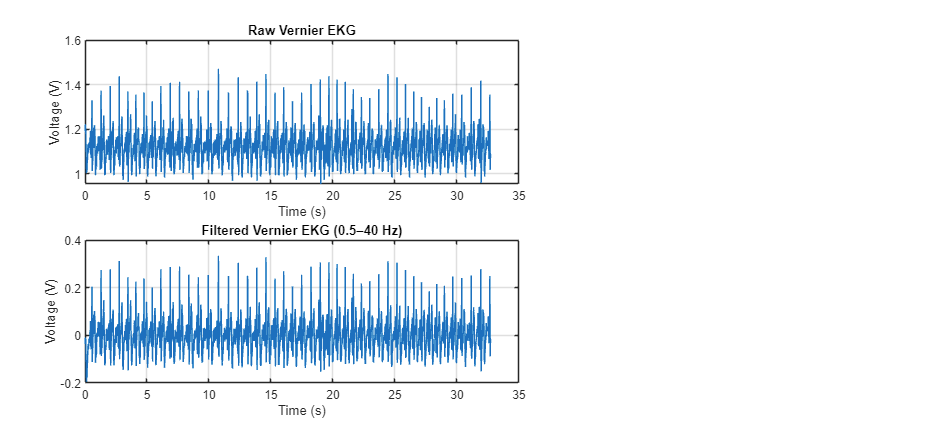
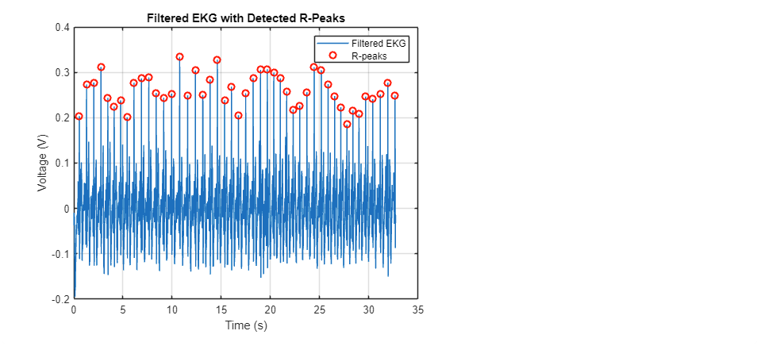
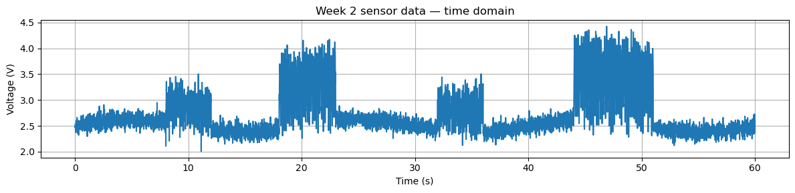
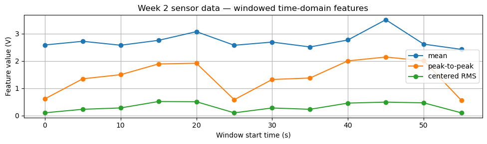
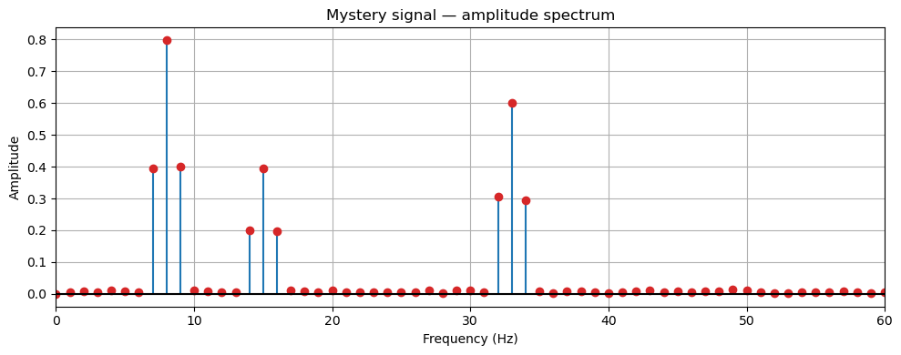

This page brings the MATLAB and Python signal-processing work together in one case study. The MATLAB workflow filtered EKG data and identified R-peaks for heart-rate estimation, while the Python workflow examined time-varying sensor activity and used FFT analysis to resolve frequency components in a noisy signal.
MATLAB: EKG Filtering & Heartbeat Detection
The EKG workflow imported time and voltage data, estimated a 100 Hz sampling rate, and applied a 0.5-40 Hz Butterworth band-pass filter. Zero-phase filtfilt processing reduced unwanted content without shifting the timing used for R-peak detection.


- Import time and voltage data from the recorded EKG dataset.
- Apply a 0.5-40 Hz Butterworth filter with zero-phase processing.
- Use MATLAB peak detection to locate candidate R-peaks.
- Calculate R-R intervals and estimate heart rate as 60 divided by the interval.
Python: Windowed Features & FFT
The Python notebook explored both time-domain structure and frequency content. Five-second windows were summarized with mean, peak-to-peak, and centered RMS features. A separate controlled exercise applied a Hann window and amplitude-scaled FFT to a noisy signal containing known components.



Engineering Takeaways
- Time-domain and frequency-domain views answer different questions about the same signal.
- Filtering choices must preserve the timing information needed for event detection.
- Windowed features provide compact descriptions of changing sensor activity.
- Known-frequency inputs are useful for checking FFT implementation and interpretation.